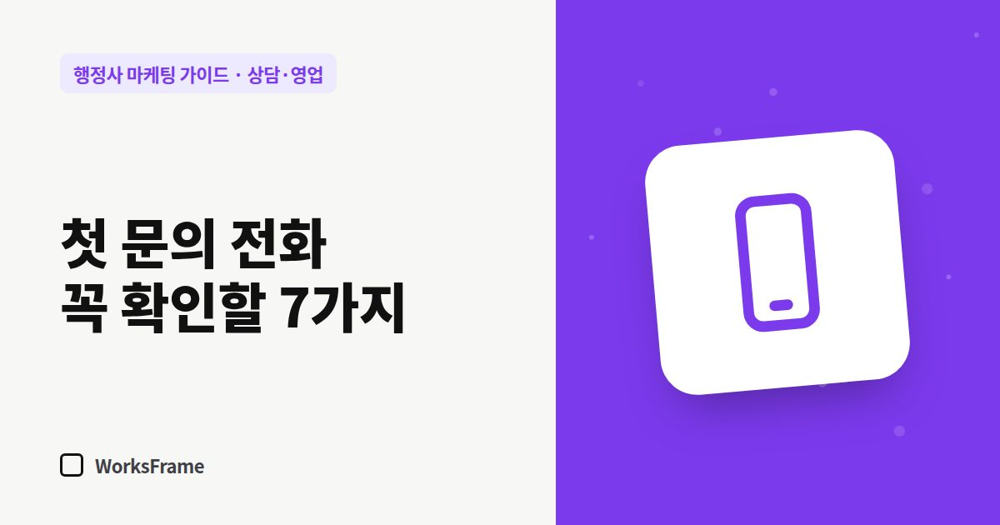

상담·영업
첫 문의 전화에서 꼭 확인할 7가지 — 행정사 상담 응대 스크립트
한 줄 답
첫 전화에선 무슨 일인지, 누구 일인지, 기한, 서류 상태, 이전 시도, 비용 안내, 다음 단계. 이 7가지를 확인하고 필요한 서류 목록은 바로 문자로 보내세요.

첫 전화는 짧게 끝나기 쉽습니다. 고객은 “얼마예요?”만 묻고, 사무소는 “상황마다 달라요”라고 답하면 대화가 거기서 끝납니다. 첫 통화에서 확인할 것을 정해 두면 상담이 다음 단계로 넘어갑니다.
7가지 체크 항목
| 순서 | 확인할 것 | 질문 예 |
|---|---|---|
| 1 | 무슨 일인지 | “어떤 일로 연락 주셨어요?” (고객이 쓰는 말 그대로 메모) |
| 2 | 누구의 일인지 | “본인 일이세요, 회사·가족 일이세요?” |
| 3 | 기한 | “언제까지 해야 하는 일인가요? 받은 통지서가 있나요?” |
| 4 | 지금 상태 | “서류는 어디까지 준비되어 있나요?” |
| 5 | 이전 시도 | “이미 신청했거나 거절·보완 받은 적이 있나요?” |
| 6 | 비용 안내 | 수임료가 정해지는 방식 설명 |
| 7 | 다음 단계 | “서류를 카톡으로 보내 주시면 ○일까지 검토해서 알려 드릴게요” |
비용 질문에는 ‘범위 + 이유’
“이 업무는 보통 ○○만~○○만 원 사이이고, 서류 준비 정도와 보완 여부에 따라 달라집니다. 서류를 먼저 보고 진행 전에 정확한 견적을 드리고, 동의하시면 진행합니다.”
금액을 말할 수 없더라도 정해지는 방식은 설명하세요. (수임료 안내)
통화를 끝내기 전에
- 연락처와 선호하는 연락 방법(전화·카톡·문자)
- 다음 연락 날짜를 약속
- 필요한 서류 목록은 문자·카톡으로 바로 보내기 — 말로만 하면 잊어버립니다
하지 말아야 할 말
- “무조건 됩니다”, “걱정 마세요, 100%예요”
- 업무 범위를 넘는 법률 판단
- 통화로 신분증 번호 등을 받아 적기 — 필요한 서류는 안전한 방법으로
자주 묻는 질문
상담 중에 모든 걸 설명해 줬는데 연락이 끊겨요.
설명이 충분했다면 스스로 할 수 있는 고객이었을 수 있습니다. 대신 “서류 검토”라는 다음 단계를 제안하면 이어지는 경우가 많습니다.
전화 상담료를 받아야 할까요?
사무소 방침에 따릅니다. 받는다면 전화 전에 미리 안내하고, 홈페이지에도 적어 두세요.